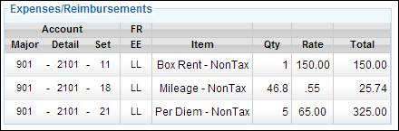

Once a timecard is submitted and approved by department level approvers it is delivered to production level approvers who are typically Payroll and/or Production Accountants. These production approvers have access to the tables and fields in the timecard that are reserved for payroll calculation.
These tables and fields are present only in the full timecard view. These tables are described in detail, below.
The submitted hours table in the full view displays the hours worked for each of the seven days of the work week as well as NDBs, re-rates, and employee-reported MPV information per day.
Once a timecard has been signed and submitted, the submitted hours are locked. The remaining fields may be edited by payroll.
Full Timecard Submitted Hours Table
· Date: The weekday and date for each day of the week.
· Day Type: The day type identifier for the employee's work day. (i.e. Studio, Distant, Sick, Off, etc.).
· NDB/NDM: A check indicates that the day's Non-Deductible Breakfast and/or Meal was taken. This field is reported by the employee.
· Call: The employee's call time, or work start time.
· Meal 1 Out: The time the employee started the first meal.
· Meal 1 In: The time the employee completed the first meal.
· Meal 2 Out: The time the employee started the second meal.
· Meal 2 In: The time the employee completed the second meal.
· Wrap: The employee's wrap time for the day, or work end time.
· Hours: The number of hours the employee worked per day.
· MP: The number of meal penalty violations, if any, reported by the employee.
· Re-Rate: A check indicates that the employee is reporting that they worked an occupation different from their typical role, and therefore may need to receive a different rate for that work.
After the submitted hours section, there are a number of additional columns used to track Day Types, Meal Penalties, Coding, and Job Splits for each work day. These fields are described below.
Additional Daily Columns

· NDB/NDM: A check indicates that the day's Non-Deductible Breakfast and/or Meal was taken. This field is used by the Accounting department to identify if these meals were taken.
· NDM End: Enter the time the non deductible breakfast ended.
· Grace 1: If grace was called for meal 1, this shows the number of minutes for the grace period.
· MPV 1: The number of meal penalty violations for meal 1, as computed by the production's payroll department
· Grace 2: If grace was called for meal 2, this shows the number of minutes for the grace period.
· MPV 2: The number of meal penalty violations for meal 2, as computed by the production's payroll department.
· Forced Call: Indicates if a forced call occurred.
· State: The state in which the employee worked on the particular work day.
· LOC: The Location Code, if applicable.
· Account/Major: If applicable, the Major Account number for the day on which the employee worked.
· Account/Set: If applicable, the Set Account number for the day on which the employee worked.
· Last Man In: The time at which the last crew member received meal 1.
The remaining fields determine if multiple jobs were worked and when. If only one job was worked by the employee for the week, these fields can be disregarded.
· Job # (1st): Shows the job number that the employee began the day working.
·
· Job # (2nd): If a split occurred during the day, this displays the job number of the second job worked that day.
·
· Job # (3rd): If a second split occurred during the day, this displays the job number of the third job worked that day.
·
Split by Percent
Example:
An employee works eight hours on two jobs (Call time: 8.0, Wrap: 16.5, with a 30 minute meal at 12.0). The first four hours are job #1 and the last four hours are job #2. If splitting by hours, the split occurs at 12.5. If splitting by percent, the split allocates 50% of the worked hours to job #1.
You can represent this split using either hours or percentages as the delineator.
If delineating by time:
If delineating by percent:
Note: As you select job numbers from the Job # fields, the jobs are created and displayed in job tables located below the job split table.
The Expenses & Reimbursements table tracks the employee's box rental, mileage, and other expenses or reimbursements for the employee. Items may be added and removed to this table as necessary.
Each line item in this table contains a place to enter an account code consisting of Major, Detail, Set, and Free field.
Expenses/Reimbursements Table

· Account: The account code for the item. Fields for Major, Detail, Set, and Free are available.
·
Item:
A description of the expensed or reimbursed item.
·
Qty:
The quantity of items, such as miles driven or days of per diem.
·
Rate:
The rate in units of currency.
·
Total:
The total per line item. (Qty. x Rate)
Below the Expense/Reimbursements table is the Comments field. These comments are visible to anyone who can view the timecard. Anyone able to edit or approve the timecard may add to these comments.
The Comments Field
Once a comment has been added it may not be deleted.
Below the comments field in the lower left of the Timecard mini-tab is the History section. This section displays the digital signatures collected for the timecard as well as the audit trail entries for the timecard. Audit trail entries are tracked for the following timecard actions. Some of these actions require an e-signature, others do not.
· Submitting the timecard (e-signature required)
· Approving the timecard (e-signature required)
· Rejecting the timecard
· Recalling the timecard
· Pulling the timecard from a lower approver
· Locking the timecard
The Signatures Only button above the history trail acts as a filter, only displaying the e-signatures.
If you have employees reporting their time on paper and using paper signatures, Lightspeed allows you to attach a copy of the paper timecard to the employee's digital timecard record. Each online timecard can store one scanned image of a paper timecard.
To attach a paper timecard to an online timecard use the following steps.
1. View the timecard for the applicable employee and week ending on the full timecard screen.
2. Click on Edit to go to edit mode.
3. At the lower left side of the screen on the Timecard mini-tab, click Add Attachment.
4. Select the scanned image file and upload it. You may choose .pdf or image files such as .jpg or .gif.
The image of the paper timecard is now attached to the online timecard.
5. Click on the Save button in the lower right corner of the screen to save the timecard
Job Tables appear below the Job Split table and above the Pay Breakdown table.
When a timecard is submitted the employee's job, as per the start form, is created as job #1. Additional jobs may be added as needed, either via the job split fields or via the Add Job button above the job tables.
Job Tables in Edit Mode
Note: The Jobs tables section can be expanded or compressed via the [-] and [+] buttons next to the Jobs heading at the top left corner of the Jobs tables section. Compressing this section allows you to move the Pay Breakdown section closer to the submitted hours table.
Each job table contains a header and a breakdown of hours worked for that job.
Job Table Header:
· Job #: The job number, in large font in the upper left corner of the table.
· Loc: The Location Code, if applicable.
· Account: The account code for the job. Fields for Major, Detail, Set, and Free are available.
·
Occ.
Code: The occupation code for the employee.
· Rate: The employee's hourly rate.
· Premium: The employee's premium hourly rate, if applicable.
· Box: The box rental rate for the job.
Job Hours Breakdown:
· Date: The day and date of the work week.
· 1.0: Hours worked at straight time, a rate multiplier of 1.0x.
· 1.5: Hours worked at time and a half, a rate multiplier of 1.5x.
· 2.0: Hours worked at double time, a rate multiplier of 2.0x.
· 2.5: Hours worked at double and a half, a rate multiplier of 2.5x.
· 3.0: Hours worked at triple time, a rate multiplier of 3.0x.
· 3.5: Hours worked at triple and a half, a rate multiplier of 3.5x.
· MP1: The number of meal penalty violations for this job for meal 1.
· MP2: The number of meal penalty violations for this job for meal 2.
The last 4 rate multiplier columns (2.0 - 3.5) may be customized by clicking on the rate multiplier number in the column header. Use the following steps to change a rate multiplier:
1. If you are not already in edit mode, click on the Edit button in the top right corner of the screen.
2. Click on the rate multiplier that you wish to change. For example, if you want to change 2.5 to another number, click on 2.5 in the column heading.
3. The Set Custom Multiplier popup appears.
Custom Multiplier
4. Enter the new Rate Multiplier. You may enter a number from 0.1 to 9.9.
5. If you want this multiplier to use the employee's premium rate rather than the regular rate, select the Use Premium Rate checkbox.
6. Click on Set to save the change.
The job table is updated with the new rate multiplier. If you have selected the premium rate, the letter "p" is added as a suffix to the rate multiplier.
There are two ways to add a new job to your worksheet:
· Select the next highest job number from any of the Job # dropdowns in the job split table area in the upper right of the worksheet. For example, if you have two jobs and want to add a third, select the number 3 from any of the dropdowns. Job 3 will automatically be created.
· Click on the Add Job button above the job table section of the worksheet.
While in edit mode, click on the red X just above and to the right of the job # in the upper left corner of a job table to delete that job from the worksheet.
While in edit mode, click on the small eraser icon in the upper left corner of a job table to clear all of the data from that job.
While in edit mode, the Fill Jobs button is present in the upper right corner of the Jobs section. Clicking on the Fill Jobs buttons copies the employee submitted hours into the Job Tables, spreading the hours across multiple jobs if applicable. Meal Penalties are also copied to the Job Tables.
If the employee's hours break into undesired rate multipliers you may update the hours as required.
If the number of hours in the Jobs Tables do not match the number of hours submitted by the employee, a red warning message is displayed below the employee hours, stating "Job totals do not match total hours."
Below the Job Tables is the Pay Breakdown table. The Pay Breakdown table is used to list all of the pay items for the employee's weekly payroll including hours, box rentals, mileage, per diem, and other pay and reimbursements.
Pay Breakdown Table
The Pay Breakdown table contains the following fields:
· Account: The account code for the job. Fields for Major, Detail, Set, and Free are available.
·
Category:
The category of the payroll line item.
(i.e. 1.0x Hours, Meal Penalty, Mileage, Sick Pay, etc.)
·
Hrs/Qty:
In the case of labor, the number of hours worked. In the case of other reimbursements, the
quantity of items.
·
X
(multiplier): The multiplier for the hours or quantity. For example, if the work hours were worked at
double time, the multiplier is 2.0.
·
Rate:
The rate in units of currency.
·
Amount:
The total per line item. (Hrs/Qty. x
Multiplier x Rate)
·
Grand
Total: The sum of all line items in the Pay Breakdown.
Use the Auto Pay button above the Pay Breakdown table to automatically populate the timecard's Pay Breakdown. When Auto Pay is clicked, it calculates the amounts owed to the employee for labor, expenses, and reimbursements, and creates line items in the Pay Breakdown table for each of these items.
Note: When you use the Auto Pay button, any information already in the Pay Breakdown table is deleted and replaced with the Auto Pay line items.
Auto Pay calculates time and labor from the numbers in the Job Tables. Therefore, if the numbers in the Job Tables do not match the hours submitted by the employee, the hours in the Pay Breakdown will also not match the submitted hours.
Account coding and rates are taken from the Job Tables as well.
Auto Pay copies and pastes the line items from the Expenses/Reimbursements table into the Pay Breakdown table. Account coding is copied as well.
There are two ways to add a line to the Pay Breakdown table.
· Click on the Category dropdown menu on the bottom line of the Pay Breakdown table. A dropdown menu will display the various pay breakdown category types. Select on to add it as a new line item.
Adding a Pay Breakdown Line
· Click on the Insert Row button at the top right corner of the Pay Breakdown table. A popup allows you to insert a row before any existing line item.
Insert Row for Pay Breakdown
The Payroll Comments field is a text box for the payroll department to leave comments intended only for production level timecard approvers. Only people with permission to View or Edit Timecard Gross may see these comments. Employees and department level approvers, unless explicitly granted permission, do not have access to these comments and cannot read them.
Payroll Comments
Once a comment is added it cannot be removed.
Related Topics